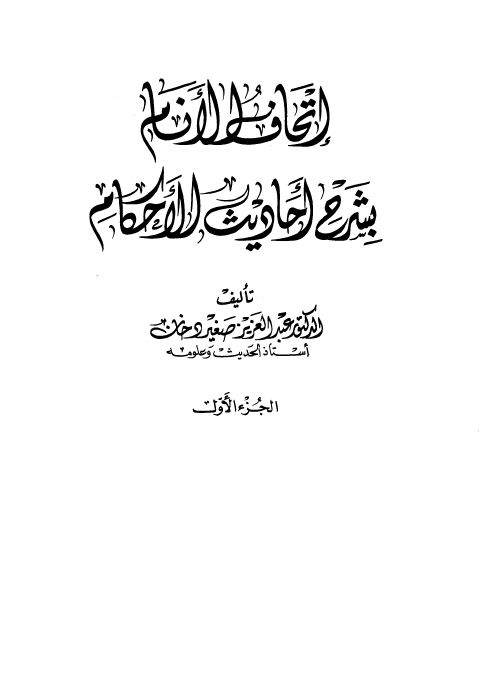

Downloads need an internet connection.
إتحاف الأنام بشرح أحاديث الأحكام
Authors: عبد العزيز صغير دخان
Publishers: مؤسسة الريان
**▫️ العنوان: إتحاف الأنام بشرح أحاديث الأحكام** ▪️ المؤلف: #عبد_العزيز_صغير_دخان ▫️ الناشر: #مؤسسة_الريان ▪️ تاريخ النشر: 1423هـ 2002م ▫️ بلد النشر: بيروت، #لبنان ▪️ الطبعة: 1 ▫️ عدد الأجزاء: ج1 ▪️ الصفحات: 432 ▫️ نوع الوعاء: #كتاب ▪️ التصنيف الرئيسي: #الحديث_وعلومه ▫️ التصنيف الفرعي: #المسانيد_الأخرى_والجوامع ۪